Propuestas de Viajes Familiares
Navega desde el menú superior entre cada viaje para ver la programación al minuto, fotos reales, alojamientos contrastados y rutas con kilómetros.
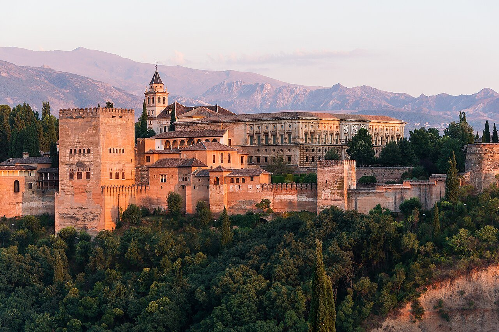
Granada & Sierra Nevada: Alhambra, Nieve & Navidad
La Alhambra con Sierra Nevada de fondo, parque de ocio invernal Mirlo Blanco con trineo ruso y roscos de nieve para Marco, Parque de las Ciencias con Biodomo, poblado navideño en el Paseo del Salón con pista de hielo, y tapeo tradicional andaluz.
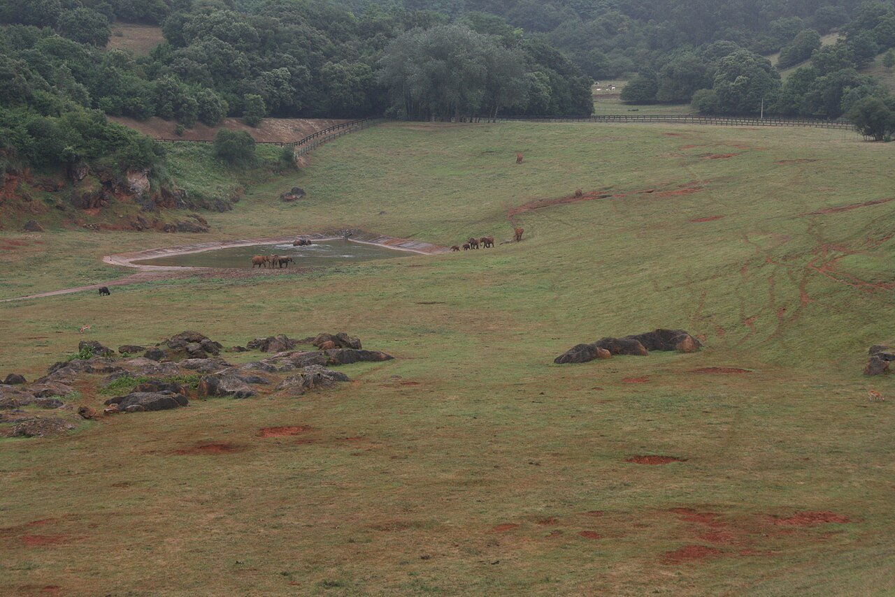
Cantabria & Picos: Cabárceno, Santillana, Fuente Dé & Secuoyas
Base céntrica en Cabezón de la Sal. Safari en coche entre elefantes y osos en Cabárceno con teleférico, las secuoyas gigantes de Monte Corona (árboles de 40m de cuento), teleférico de Fuente Dé a 1.823m en Picos de Europa, Neocueva de Altamira y cocido lebaniego.
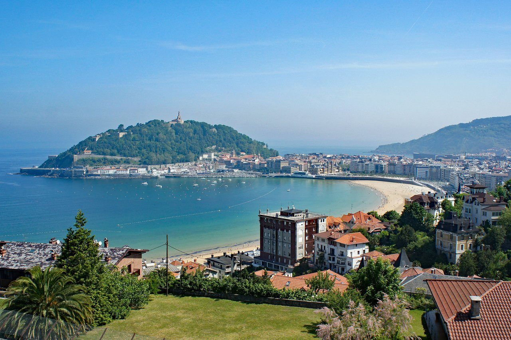
San Sebastián & Costa Vasca
Caserío con chimenea en Bera de Bidasoa, funicular y parque de Monte Igueldo, La Concha navideña, acantilados de la Cornisa Vasca, San Juan de Luz, Biarritz y pintxos en Hondarribia.
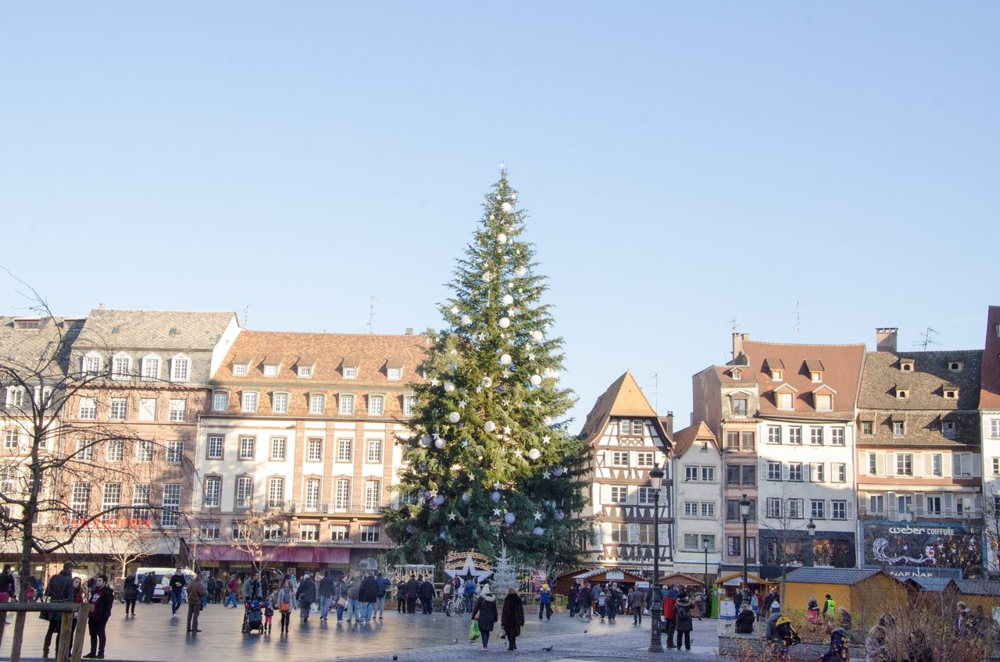
Alsacia & Mercados Navideños
Vuelo directo Madrid-Basilea con easyJet. La magia de Colmar iluminada, mercado infantil en la Petite Venise, pueblos de cuento (Eguisheim y Riquewihr) y el gran abeto de 30m de Estrasburgo.
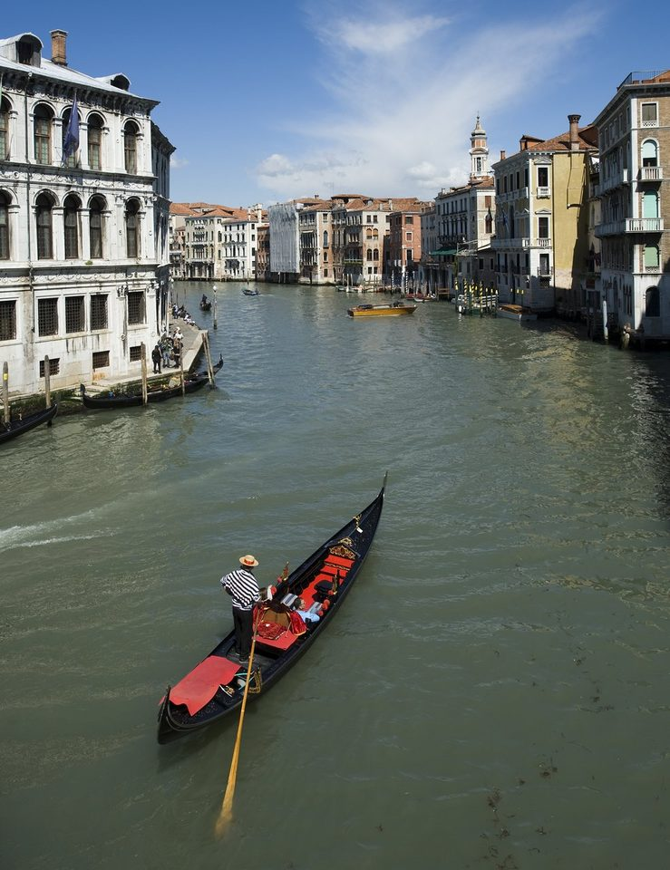
Venecia, Florencia & Pisa
Vuelo directo a Venecia, Gran Canal y góndolas, tren bala Frecciarossa a 300 km/h, carrusel histórico de Florencia, Duomo y excursión a la Torre Inclinada de Pisa.
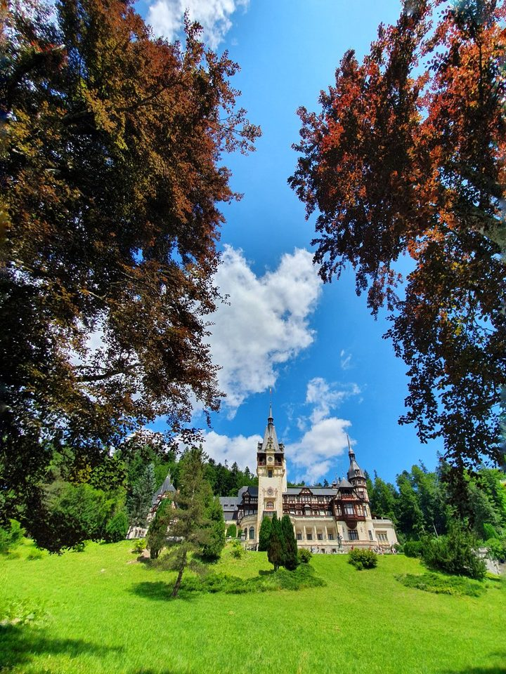
Rumanía, Osos en Libertad & Castillos
Ruta circular Cluj-Cluj con clima primaveral templado (20°C). Noria bajo tierra en Salina Turda, Santuario de Osos Libres de Zărnești, Castillo de Peleș florecido, Castillo de Bran ("Drácula") y fortaleza de Corvinos.
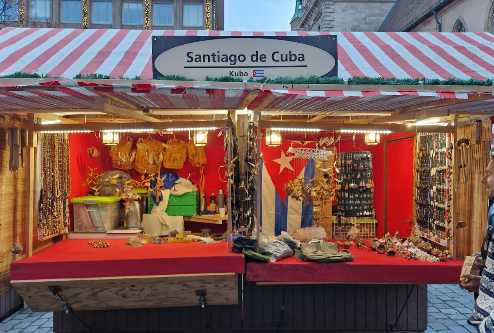
Núremberg & Mercados Navideños de Baviera
El mercado navideño más famoso del mundo en Hauptmarkt, la mágica Kinderweihnacht para Marco con tiovivo histórico y tren de vapor, el Castillo Imperial y aroma a canela y salchichas en leña.
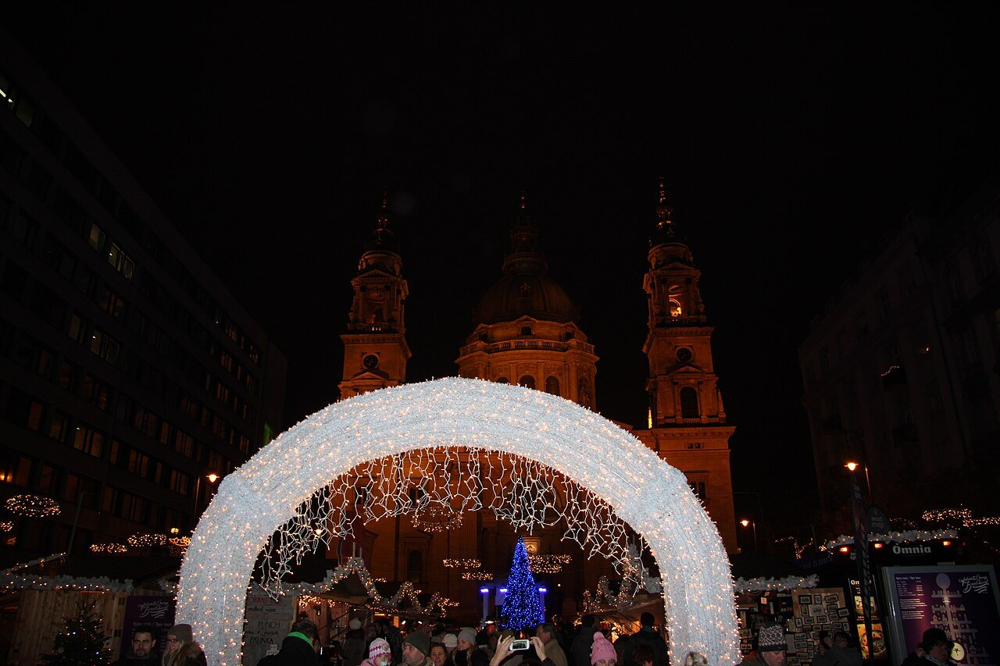
Budapest & Luces del Danubio
Mercados de ensueño en la Basílica de San Esteban con videomapping 3D y pista de hielo, Bastión de los Pescadores, tranvía de luz Fényvillamos, crucero al anochecer y aguas termales en Széchenyi.

Sur de Francia: Carcasona, Les Grands Buffets & Toulouse
La colosal Cité medieval amurallada de Carcasona (52 torres), el mayor buffet del mundo en Les Grands Buffets de Narbona (111 quesos y marisco), safari en coche en la Reserva Africana de Sigean, el Minotauro mecánico gigante de 14m en Toulouse y Colliure.
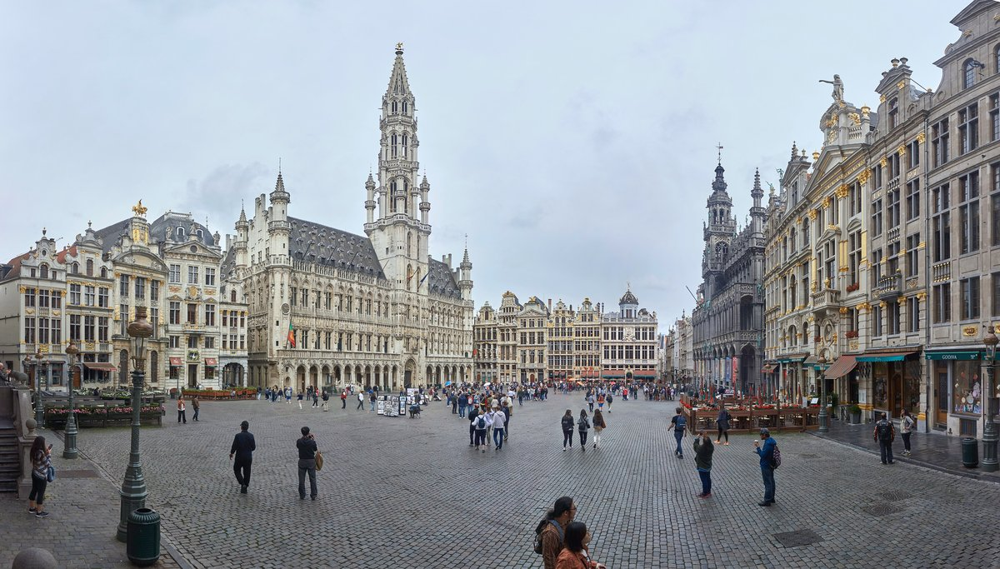
Bélgica: Cuento Medieval, Mini-Europe & Chocolates
Bruselas, Brujas y Gante. Ascenso al futurista Atomium, parque de maquetas Mini-Europe, paseos en barca por Brujas, castillo de caballeros en Gante y gofres recién hechos con chocolate belga.
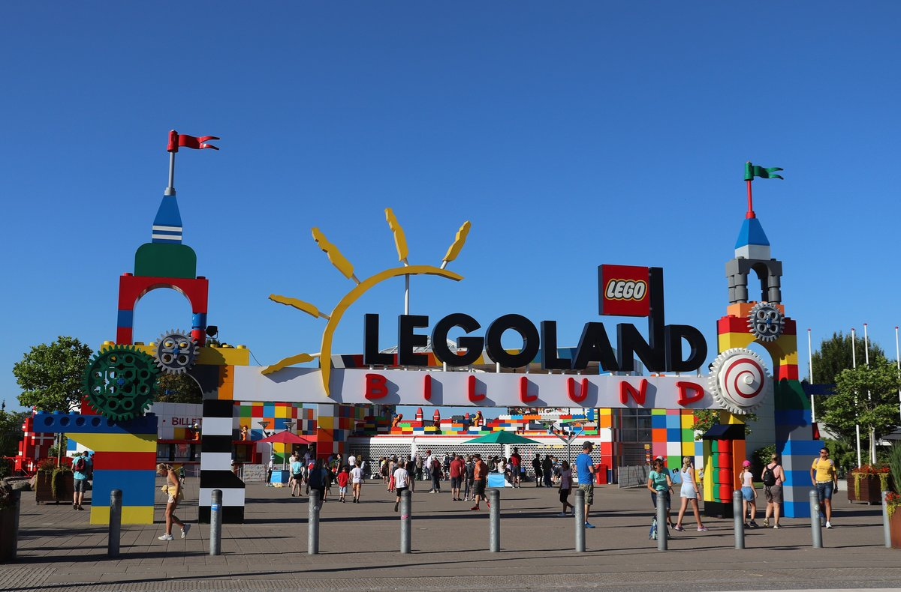
Dinamarca: Billund Capital LEGO & Copenhague
El sueño de cualquier niño de 4 años: Parque temático original LEGOLAND Billund, los 25 millones de ladrillos de LEGO House, restaurante robotizado MINI CHEF, parque acuático Lalandia y canales de Nyhavn en Copenhague.
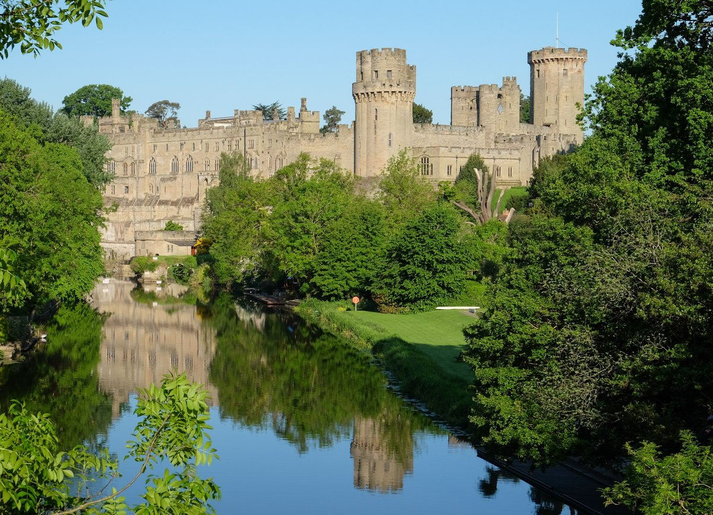
Birmingham: El Reino del Chocolate & Castillo de Warwick
La fábrica mágica Cadbury World estilo Willy Wonka (cine 4D y cata de chocolate fundido), el impresionante Castillo medieval de Warwick con justas y catapultas, túnel marino 360° SEA LIFE y canales de Brindleyplace.
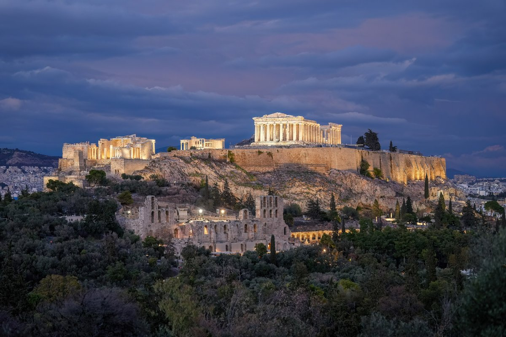
Grecia: Atenas, Riviera de Playas Calmas & Crucero Islas
Estudio comparativo para Agosto: ¡La última semana es ~1.340 € más barata que la primera! Partenón a primera hora, cambio de guardia de los Evzones en Sintagma, playas tranquilas sin olas para Marco y minicrucero a las islas de Hidra y Egina.